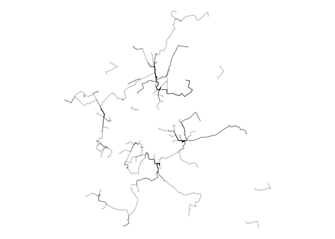
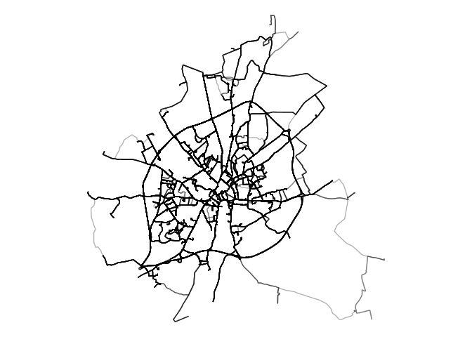

The input of the network generation approaches demonstrated in this repo is origin-destionation data. There are many sources of OD data, see the documentation in the odgen.qmd for a way to generate synthetic OD data that we’ll use in the reproducible code below.
Setup
For reproduducibility, we have setup a Docker container with all the dependencies needed to run the code below. The easiest way to run the code and develop new code in this repo may be with GitHub Codespaces which can be accessed via github.com/codespaces/new.
Pull the latest version of the container with the following:
Then open the project with the .devcontainer.json file in Visual Studio Code (see VS Code docs for more on this).
That should allow you to run the code in the README with the following command:
quarto::quarto_render("README.qmd")If you haven’t got project running in a container, you can run the code below in your local environment.
To run the code below you need to have R and Docker installed. After you have installed R, you can install the packages we’ll use as follows:
# Install pak if not already installed:
if (!requireNamespace("pak", quietly = TRUE)) {
install.packages("pak")
}
pkgs = c("sf", "tidyverse", "tmap", "pak")
pkgs_to_install = pkgs[!pkgs %in% installed.packages()]
if (length(pkgs_to_install) > 0) {
pak::pkg_install(pkgs_to_install)
}
# Load the packages with vapply:
vapply(pkgs, require, logical(1), character.only = TRUE)We will also install a couple of package that are not on CRAN:
pak::pkg_install("acteng/netgen")
pak::pkg_install("Urban-Analytics-Technology-Platform/od2net/r")After getting the software installed, load packages we’ll use as follows:
Data import and visualisation
It’s worth importing and visualising the OD datasets before routing and network generation stages.
# A tibble: 6 × 3
O D trips_modelled
<chr> <dbl> <dbl>
1 E01013335 121266 6.37
2 E01013336 121266 3.26
3 E01013337 121266 4.57
4 E01013338 121266 6.46
5 E01013339 121266 2.95
6 E01013340 121266 0.124
od_geo = sf::read_sf("res_output.geojson")
od_geo |>
ggplot() +
geom_sf(aes(alpha = trips_modelled))
od2net
Building on code in the od2net R package, we can generate the files needed for the network generation stage.
After you have installed the package, prepare the input datasets and run the network-generation code to generate output.geojson and output.pmtiles outputs:
origin_zones = netgen::zones_york
names(origin_zones) [1] "LSOA21CD" "LSOA21NM" "total" "f0_to_15" "f16_to_29"
[6] "f30_to_44" "f45_to_64" "f65_and_over" "m0_to_15" "m16_to_29"
[11] "m30_to_44" "m45_to_64" "m65_and_over" "geometry"
names(origin_zones)[1] = "name"
sf::write_sf(origin_zones, "input/zones_york.geojson", delete_dsn = TRUE)
od2net::make_osm(zones_file = "input/zones_york.geojson")Reading layer `zones' from data source
`/home/robin/github/acteng/netgen/input/zones.geojson' using driver `GeoJSON'
Simple feature collection with 121 features and 13 fields
Geometry type: MULTIPOLYGON
Dimension: XY
Bounding box: xmin: -1.2237 ymin: 53.87459 xmax: -0.9196789 ymax: 54.05661
Geodetic CRS: WGS 84
od2net::make_origins()
# Optionally, get elevation data:
# netgen:::make_elevation()
destinations = netgen::destinations_york # Provided in the R package
names(destinations)[1] = "name"
destinations = destinations[1]
class(destinations$name) = "character"
sf::write_sf(destinations, "input/destinations.geojson", delete_dsn = TRUE)
# Save the OD dataset:
od = od_geo |>
sf::st_drop_geometry() |>
transmute(from = O, to = as.character(D), count = round(trips_modelled))
readr::write_csv(od, "input/od.csv", quote = "all")To install the od2net package, run the following:
cargo install --locked --git https://github.com/Urban-Analytics-Technology-Platform/od2netIf you are running the code in a container, you should already have the od2net package installed. Check this with the following:
system("od2net --version")The config file is as follows:
{
"requests": {
"description": "Test data for SchoolRoutes project.",
"pattern": {
"ZoneToPoint": {
"zones_path": "zones.geojson",
"destinations_path": "destinations.geojson",
"csv_path": "od.csv",
"origin_zone_centroid_fallback": false
}
},
"origins_path": "buildings.geojson",
"destinations_path": "destinations.geojson"
},
"cost": "Distance",
"uptake": "Identity",
"lts": "BikeOttawa"
}Then run the following code to generate the network:
system("od2net config.json --rng-seed 42")See below how to run it with Docker if you’re not running these commands in the .devcontainer and you don’t have od2net installed.
Run the tool with Docker as follows:
After that you should see the following in the output folder:
fs::dir_tree("output")output
├── counts.csv
├── failed_requests.geojson
├── output.geojson
├── rnet.pmtiles
└── rnet_output_osrm_overline.geojsonFrom that point you can visualise the pmtiles in the website at od2net.org or other front-end application, as shown below.
Routing
There are many ways to calculate routes. The simplest in many cases will be to calculate them with a routing engine. Let’s do that with interfaces to the OSRM routing engine in the first instance. Note: if you use the od2net approach, you can do the routing and network generation stage in a single step, see below for more on that.
OSRM: basic
od_geo_top_100 = od_geo |>
slice_max(trips_modelled, n = 100)
routes_osrm_minimal = stplanr::route(
l = od_geo_top_100,
route_fun = stplanr::route_osrm,
osrm.profile = "foot"
)
Locally hosted OSRM
We can spin-up a local OSRM server to calculate routes as follows:
location = osmextract::oe_match(
od_geo_top_100 |> sf::st_union()
)
osmextract::oe_download(
location$url,
file_basename = "osm.pbf",
download_directory = "."
)Then with the system shell:
docker run -t -v "${PWD}:/data" ghcr.io/project-osrm/osrm-backend osrm-extract -p /opt/car.lua /data/geofabrik_osm.pbf || echo "osrm-extract failed"
docker run -t -v "${PWD}:/data" ghcr.io/project-osrm/osrm-backend osrm-extract -p /opt/car.lua /data/geofrabik_osm.osm.pbf || echo "osrm-extract failed"That should generate something like:
[2024-08-27T15:00:31.786775132] [info] Expansion: 766813 nodes/sec and 382310 edges/sec
[2024-08-27T15:00:31.786776903] [info] To prepare the data for routing, run: ./osrm-contract "/data/geofabrik_osm"
[2024-08-27T15:00:31.836550204] [info] RAM: peak bytes used: 532934656Note the process used 532934656 bytes (532.9 MB) of RAM.
Then:
docker run -t -v "${PWD}:/data" ghcr.io/project-osrm/osrm-backend osrm-partition /data/geofabrik_osm.osrm || echo "osrm-partition failed"
docker run -t -v "${PWD}:/data" ghcr.io/project-osrm/osrm-backend osrm-customize /data/geofabrik_osm.osrm || echo "osrm-customize failed"
docker run -t -i -p 5000:5000 -v "${PWD}:/data" ghcr.io/project-osrm/osrm-backend osrm-routed --algorithm mld /data/geofabrik_osmCheck it is alive as follows:
system('curl "http://127.0.0.1:5000/route/v1/driving/13.388860,52.517037;13.385983,52.496891?steps=true"')Now we can run all the routes:
routes_osrm_2 = stplanr::route(
l = od_geo,
route_fun = stplanr::route_osrm,
osrm.profile = "foot",
osrm.server = "http://127.0.0.1:5000/"
)
sf::write_sf(routes_osrm_2, "routes_osrm_2.geojson", delete_dsn = TRUE)
system("gh release upload v0.1.0 routes_osrm_2.geojson")Let’s visualise the routes:
